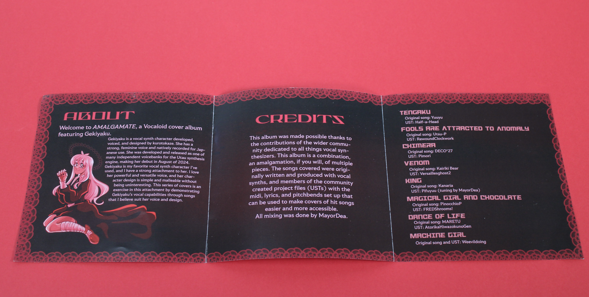
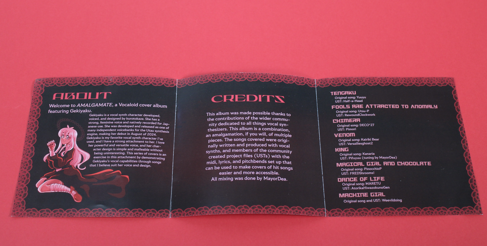

Emily Flynn's Project
 


Description
A vocal album inspired by Vocaloid sounds, featuring self-applied vocals and unique track designs. The album explores various moods, with cover art and additional materials reflecting the core themes of each song.
Categories
- Tiny Pic
- Foldable
- Time-Based Media
The logo represents the album’s essence, simple yet iconic, capturing the unique vocal and artistic approach.
A pamphlet that includes credits, background information, and additional details about each track, giving context to the album's creation.
A album of different songs created by the artist with a mood and aesthetic in mind.